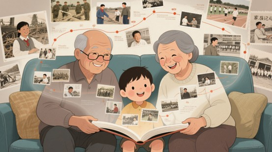
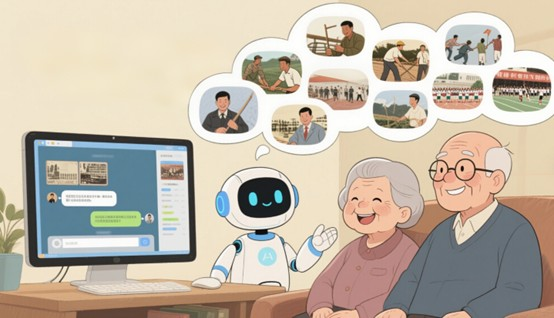

项目缘起

悠悠岁月，2.8亿银发长者承载着时代印记。传统记录难敌时光，AI开启记忆留存新篇。
核心价值
传承文化薪火，搭建代际沟通桥梁，以人民视角绘就历史长卷。
独特优势
智能相伴，如孙辈贴心交流；尊重叙事，让回忆自然流淌；规范输出，成家族记忆瑰宝。
实施路径
精研技术，打磨方言与长文处理；试点打磨，优化体验；携手推广，连接家庭与公共文化。
预期成果

岁岁有成，五万档案成家庭记忆宝库；代际情暖，年轻一代读懂长辈风华；个体微光，融入集体历史星河。
悠悠岁月，2.8亿银发长者承载着时代印记。传统记录难敌时光，AI开启记忆留存新篇。
传承文化薪火，搭建代际沟通桥梁，以人民视角绘就历史长卷。
智能相伴，如孙辈贴心交流；尊重叙事，让回忆自然流淌；规范输出，成家族记忆瑰宝。
精研技术，打磨方言与长文处理；试点打磨，优化体验；携手推广，连接家庭与公共文化。
岁岁有成，五万档案成家庭记忆宝库；代际情暖，年轻一代读懂长辈风华；个体微光，融入集体历史星河。